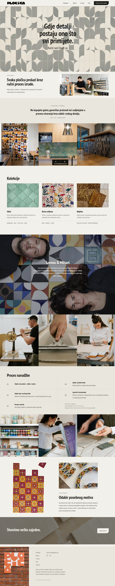

A handmade cement-tile studio's brand site — bold pattern-driven visuals built to make the craft itself the hero.
Visit site ↗Summary
Plocica is the brand site for a handmade cement-tile studio run by two owners — Lorena on form, colour, and composition; Mihael on production. The site treats the tile patterns as the design system: bold, colour-blocked grids stand in for decoration, closer to browsing a physical showroom than scrolling a brochure.
Everything the owners need to keep current — shapes, colours, finished projects — lives behind an admin panel, so the catalogue stays theirs to run without a developer in the loop.
Tech Stack
Details
Learning Experience
The key decision was recognizing that a JSON-in-repo content model wouldn't survive contact with two owners who needed to upload photos themselves — that requirement alone justified a real database and Blob Storage over a simpler static approach.
It was also a reminder that Azure App Service's local disk is ephemeral: images and data both had to live in dedicated services (Azure SQL, Blob Storage) rather than anywhere that gets wiped on every deploy.